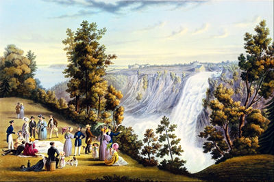
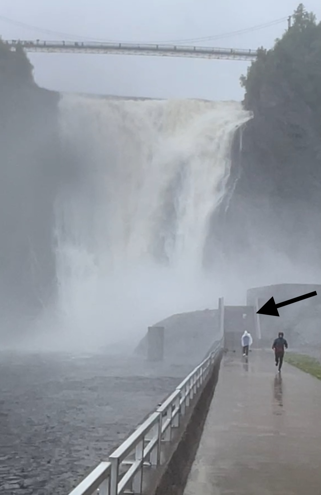
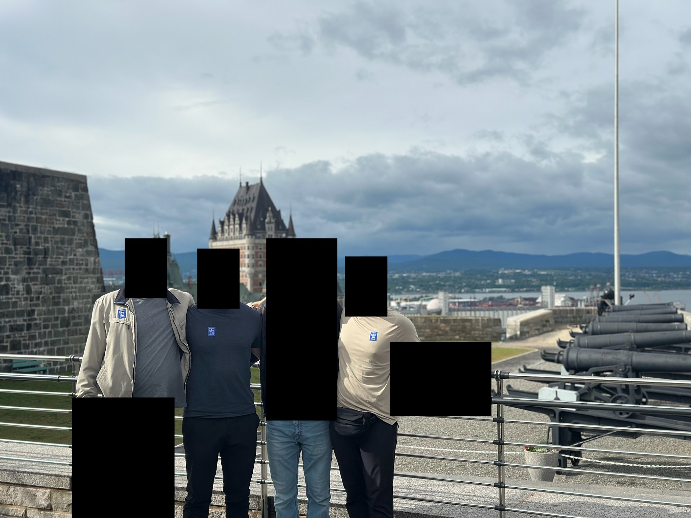
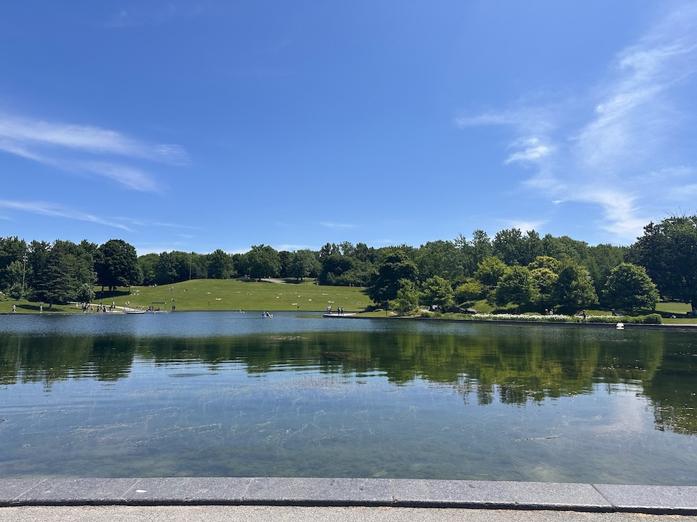
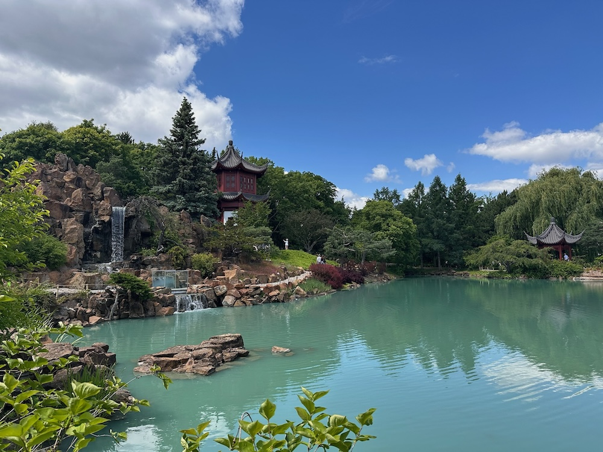
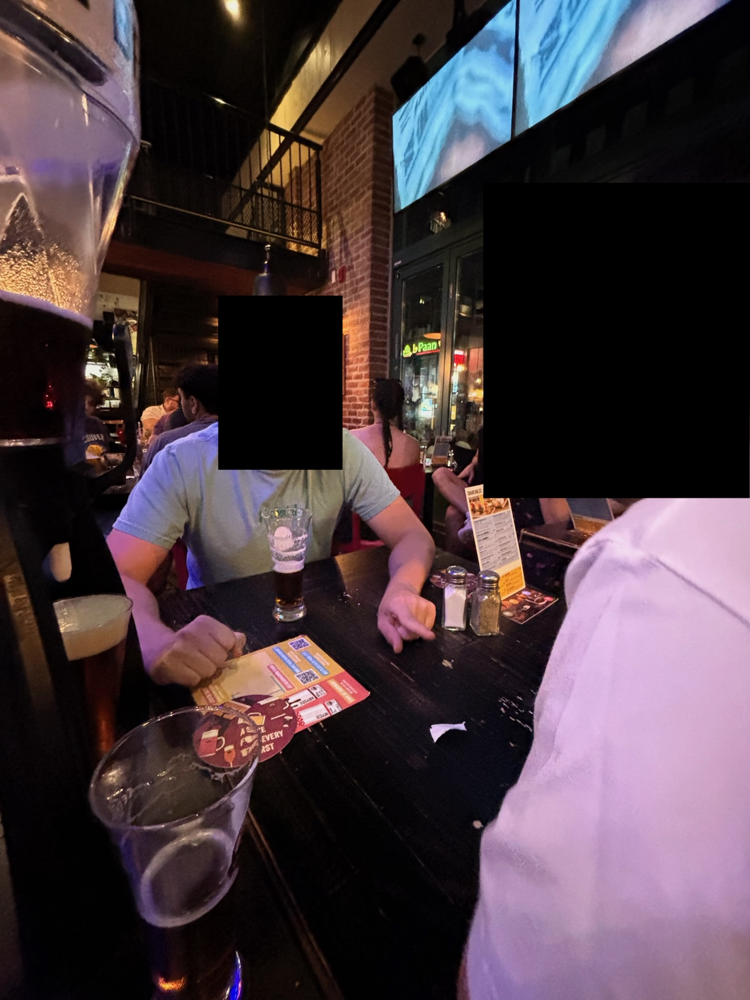

Montreal trip report from 19-23 June 2025.
I landed at YUL around 3:00pm, my brain exhausted from writing and Anki card-making while on the plane. My seatmate had already qualmed my two fears of this trip: being monolingual and being American (given Trump's recent controversial statements and stances towards Canada). He said that while French is the default language, English is spoken by pretty much everyone. He also said that Canadians distinguish between the government and the people and that'd I'd be fine unless I was rocking a MAGA hat and trying to convince residents about the benefits of getting annexed into the U.S. I didn't plan on doing either of those things.
Fun side note 1: Ever wonder why Canadian airport codes start with Y, even though the Canadian cities literally have no Ys in their name? It's because of an old 1900s-era railway naming protocol. Detailed explanation here.
The bus took me straight from the airport to downtown Montreal where I met my friends, X, Y, and Z. Buses and taxis (and supposedly rideshare services) get special lane access to and from the airport to help relieve congestion and encourage public transport. Often times the bus is both faster and cheaper at $11 per fare.
Old Montreal was my first stop of the city (the others had arrived yesterday). It felt about as touristy as most "Old [name of city]"s go: restaurants with attractive women beckoning at you to come inside, signs advertising authentic and popular foods that the locals probably don't eat as much as you think they do, etc.
It was around this time that I added a new word to my vocabulary: squall. Defined as "a sudden violent gust of wind or a localized storm, especially one bringing rain", we quickly learned both the "sudden" and "rain" part as we sought cover in a local pizza joint. This wouldn't be our first run-in with the Canadian Squall Gods.
We woke up early to catch a 6:30am, three-hour train ride to Quebec City.
Montmorency Falls was our first stop. While the informative signs and maps were decent enough, I still whipped out ChatGPT voice mode to feel like a real Canadian was giving me a tour (i.e., I asked ChatGPT to be as Canadian as possible, resulting in a decent accent and adding "ya know?" and "eh" to the end of every sentence). Despite the inclement weather of drizzle and gray skies it was still a nice view from the top.

Near the bottom is an observation deck of-sorts where you can get even closer to the bottom of the falls. Combine the spray from the falls with the drizzle of the sky and you get the perfect contest to see who can make it further for a free lunch. I went into the fray first, followed by X, then Y. I quickly turned around with Y, but X kept going. And going. And going some more. And some more until we couldn't even see him. He had made it as far as possible. He had reached the point of must-now-return. As expected, his clothes were sopping wet.

Lunch was at Fabrique du smoked meat. So good. Choose lean, medium, or fatty (medium or GTFO) and chow down.
Old Quebec City (yet another Old place!) was our next stop for some sightseeing and dinner. We got a wonderful free tour of the governor general's residence, Citadelle of Quebec and learned a bunch about Canada and its government along the way.

Dinner was at La Buche, described as a "sugar shack serving Quebecois cuisine & cocktails in a rustic, funky space with stone walls". While we didn't have any sugar or cocktails nor did we sit inside the stone walls, we did have a shot of "kariboo" (I cannot seem to find online using this spelling, so maybe it was all BS and they just gave us a mat shot) and some venison tartare (which, in hindsight, does not feel like a great idea, but hey, I'm still kickin'). I also learned a different type of kindness—in the form of honesty—when the waitress told us that the dessert I was looking at sucked and I should look elsewhere. I did and had some delicious tiramisu.
The bus ride home consisted of charades and sleep.
Holy shit Mount Royal Park is gorgeous. Especially when you've loaded up on bagels and muffins and protein bars. It's also steep in a lot of places—staircases can lead you almost straight up the steep, lush woods if you opt to not take the fire road.
It did feel much less "homey" and more touristy than Central Park, not that every park should be put against the One Park to rule them all. CP felt like New Yorkers galore going out to get some sun and have a good time. MRP felt more like first-timers coming to walk around and see what was what, with a good amount of local people sprinkled in doing their Saturday routine. There were cyclists, runners, hikers, sunbathers, sitters, walkers, families, couples, kayakers, rowers.

The street that the lunch restaurant, Kawha Cafe, was on felt much more homey. The street had been taken over not by hooligans and wannabe Fast and Furious drivers, but by the people! And it was for the people! to walk on and meander about and enjoy their sunny Saturday afternoon. It was glorious; throngs of people as far as they eye could see in either direction. This was a city!
The rest of the day was fairly uneventful. We went to a beer festival. We stumbled upon a pretty popular public concert that was being played in French. We ate ramen. We (read: me) convinced the others to go back home because of how exhausted I was.
Did you know Montreal hosted the 1976 Summer Olympics? Did you know they built a really big tower? Sure, not Burj Khalifa tall, but the Burj Khalifa isn't inclined like the Montreal Tower is. It's seriously gargantuan. I can only imagine what it looks like in some heavy fog looming over the surrounding area.
The Montreal Botanical Garden was a pleasant stroll.

The NBA finals were on so we plopped down at a local dive bar that smelled something odd. I got profiled as "obviously" being a) from America (because of my fanny pack), and b) from New Hampshire because of some reason I don't remember. I'll give em the American thing but the New Hampshire part was dead wrong. The end of the first quarter meant it was time to bounce to the next spot.
Ah, a proper sports bar that wasn't in a grungy basement! Turns out even people in Canada don't like OKC. We snagged a 5 L mini keg thing of beer and started pounding them like the New Hampshirites we are. The owner of the last 0.5 L or so was decided by playing fingers. I lost because, well, I was already more than 1 L deep and my calculating skills weren't at their best.

I did not partake in the last game of the evening: the casino. Instead I slept at home while the others went out. Thankfully they woke me up around 2 to tell me absolutely nothing meaningful.
I had a bit of a sobering thought while walking around: why can't I just do this in my home city? Or other cities around me? People around me yearn for international travel, viewing the destination as a "better" place than where they're at. But is it? What exactly are you getting in a foreign country that you can't get somewhere in your own country? Culture? Sure. Food? Most big cities have ethnic spots you can eat at. Sights? Sure. But are they really that different from places in your own city? Have you really explored your own city? I mean really explored it. I'm guessing not.
I've had wonderful international trips in my life—see Uganda and Iceland—but the distinguishing factor there is just how different they are from any place in the States. That seems to be the key differentiator: total difference.
It still catches me off guard when I hear someone go from what sounds like perfect French to perfect American-accented English. Food service employees would ask me something in French, I'd respond in English with a smile, and they'd respond like I was back stateside.
I had McDonalds at least three times while there. The temptation of McFlurries knows no borders.
Very multicultural!